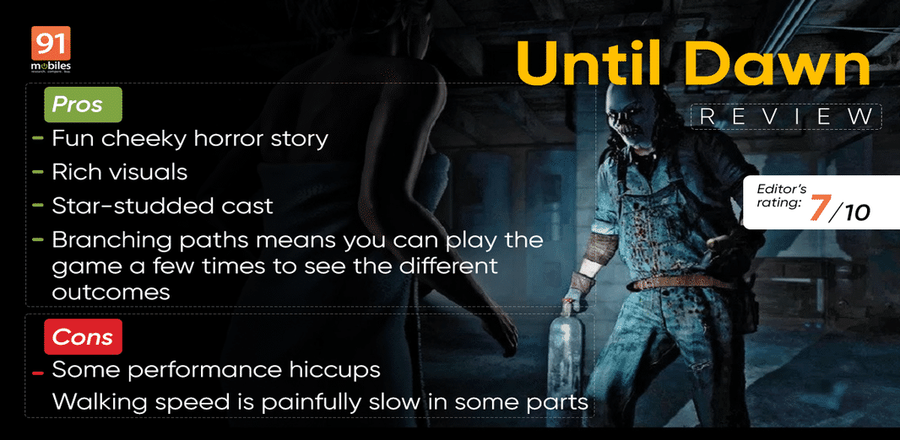

While there are a lot of video game genres that test your might and reflexes, nothing tests your stomach like a good horror game. And while the likes of Dead Space and Resident Evil test your “gamer” reflexes in addition to your tolerance for jump scares, there are some “interactive experiences” that let you enjoy the horror games without needing super fast reflexes. 2015’s Until Dawn was one such game from developer Supermassive Games. After 2015, the developer released its The Dark Pictures Anthology which expanded on the interactive video game medium.
Today we have with us a remake/retelling of the 2015 classic. It is a little baffling to see Until Dawn as a full-priced game as the Horizon Zero Dawn remake is a mere Rs 500 upgrade for anyone who owns the original 2017 game. Nonetheless, is this remake worth your attention?
If you enjoyed the cheesy horror movies from the 90s including I Know What You Did Last Summer, Saw, Urban Legend, The Craft and more, then you will feel right at home with Until Dawn. The game has a star-studded cast including the likes of Rami Malek, Brett Dalton, Peter Stormare, and more and their design has been updated to match the 2024 visuals expected from AAA games. While there are some more fillers in the story, the outcomes are largely what you saw back in 2015 with your decisions affecting the next steps of the story.
Speaking of the story, it’s fairly simple – your merry band of friends visit a cabin in the woods where a prank goes wrong and one of your friends goes missing. As usual, the body isn’t found and one year later, the same group of friends find themselves at the same cabin (shocking, I know).
As the night in the cabin progresses, you are presented with a series of events where a masked individual is out to get you and it is your decisions that determine who lives and who dies.
The gameplay is fairly simple, with you controlling different characters from the group based on where the story is going. While you can traverse the environment and interact with different objects the core gameplay comes in the form of the choices you are presented which moves the story forward. The choices are fairly intense in some situations where there is no real “right choice” and this only helps in increasing the playability to see the branching paths of the game. The tensions in some situations are quite high where you choose who lives and who dies and even then the game makes you feel like you could have made a better choice if you chose otherwise. Its all very “edge of the seat” kinda feeling.
There is a lot of walking and looking at clues/ pressing buttons to activate things/selecting a choice, QTE’s, so on and so forth to take the story forward.
While my only gripe with the game is that the walking is too slow, this is a game you can play when you have a few friends over and you all want to partake in an “interactive movie” and see the outcome of your choices. At least the outcome here is a lot more fulfilling than Black Mirror: Bandersnatch.
As I said above, the visuals of the game have been updated to 2024 standard and it looks fine. While Digital Foundry has reported quite a few issues with the performance, I feel that’s something that can be fixed via patches. There are stutters and slowdowns here and there and they do detract from the experience, but I played most of the game with a friend or my spouse “helping me” with the in-game decisions and they didnt seem to notice much. The visuals of the game look good.
While the celebrity voice acting is nice it is the environmental sound effects, background score and the tension you feel during the suspenseful and quiet moments that immerses you in the game.